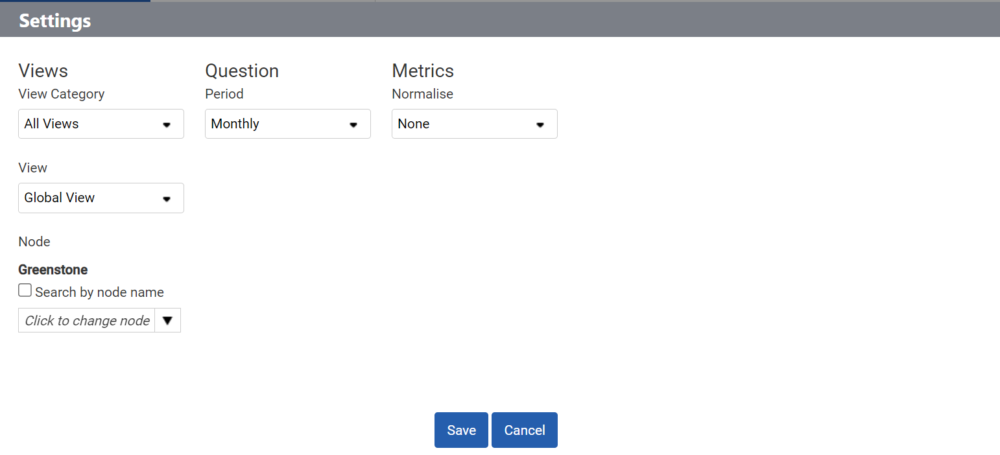
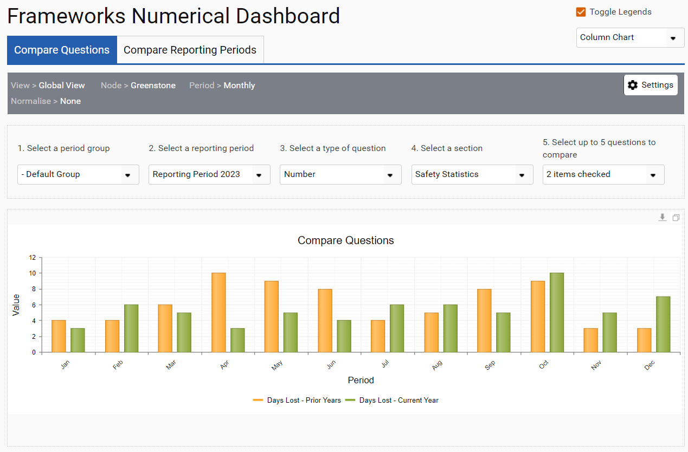
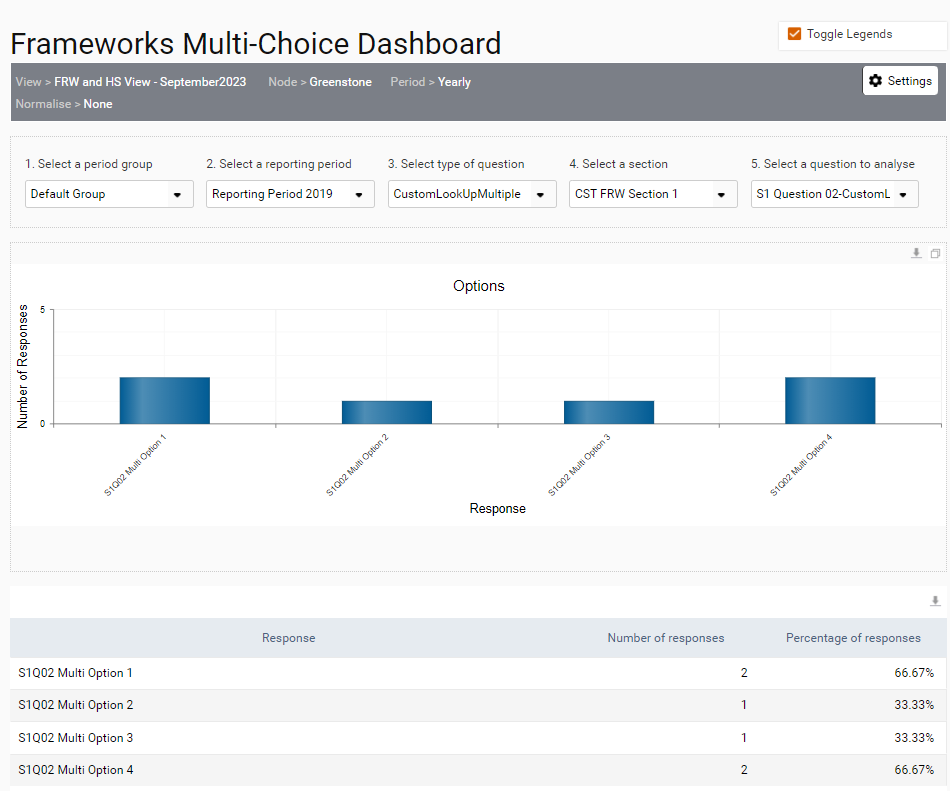
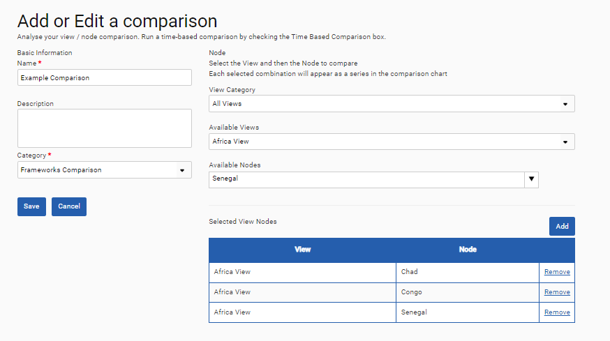
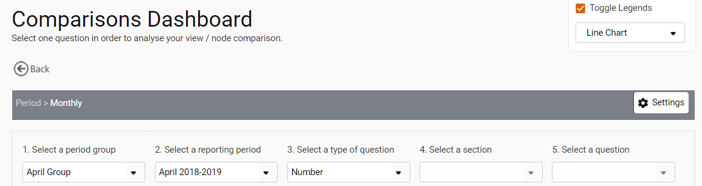

Three dashboards are available within Frameworks: the Numerical Dashboard, the Multi-choice dashboard and the Comparisons Dashboard.
| Dashboard | Description |
| Numerical Dashboard | Allows you to visualize responses from multiple questions for a given node AND to view data from questions with Cost, Number, Percentage, or Computational response types. |
| Multi-choice Dashboard | Allows you to visualize questions with single selection, multi selection and yes/no response types for a given node. |
| Comparisons Dashboard | Allows you to visualize responses from a single question across multiple views or nodes AND to view data from questions with Cost, Number, Percentage, or Computational response types. |
Numerical Dashboard
To view the numerical dashboard, go to ‘Frameworks > Analysis > Numerical Dashboard’. The ‘Settings’ box will allow you to select the View, Node, Period, and Normalisation Metric to be displayed.

The Numerical Dashboard has two tabs. The Compare Questions tab allows you to compare the responses of up to 5 questions of a similar response type from a single reporting period. First select the reporting period that you want to analyze, then select the type of question and finally the actual questions that would like to compare.

The Compare Reporting Periods tab allows you to compare the responses from a single question across up to 5 reporting periods. First select the reporting periods and then select the question that you would like to compare the responses of. It is possible to view the information on both tabs in either a column chart or a line chart by switching between the chart types in the dropdown menu at the top right of the dashboard.
Multi-Choice Dashboard
To view the Multi-Choice dashboard, go to ‘Frameworks > Analysis > Multi-Choice Dashboard’. The ‘Settings’ box will allow you to select the View, Node, Period, and Normalisation Metric to be displayed.
Once you have selected period group and reporting period, you can pick the questions you would like to analyze on the dashboard to see the number and percentage of responses for each response type.

Comparisons Dashboard
To view the Comparisons dashboard, go to ‘Frameworks > Analysis > Comparisons. The ‘Settings’ box will allow you to select the Period to be displayed. Select ‘Add Comparison’ to set up a new comparison.
Provide your comparison with a name, description, and category. Use the view category, available views and available nodes dropdowns to select the nodes and views you would like to compare. Please ensure you use the ‘Add’ button to select a node you would like to add to your comparison. When you have finished setting up your comparison select ‘Save’.

Select the ‘Run’ button to compare the nodes you have selected and then pick a period group reporting period(s) and question you would like to visualize from each of the selected nodes.
